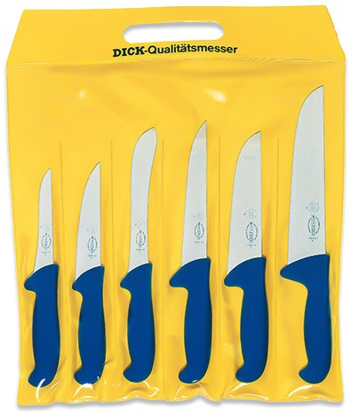

Cuchillos Carniceros Dick
Los productos F.Dick se fabrican de forma tradicional empleando tecnología de última generación y son sinónimo de calidad duradera y una larga vida útil. Este tipo de cuchillo son para uso profesional.
